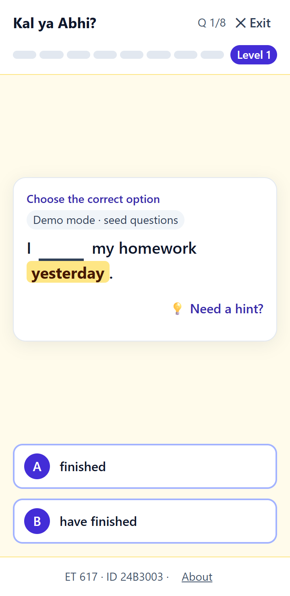
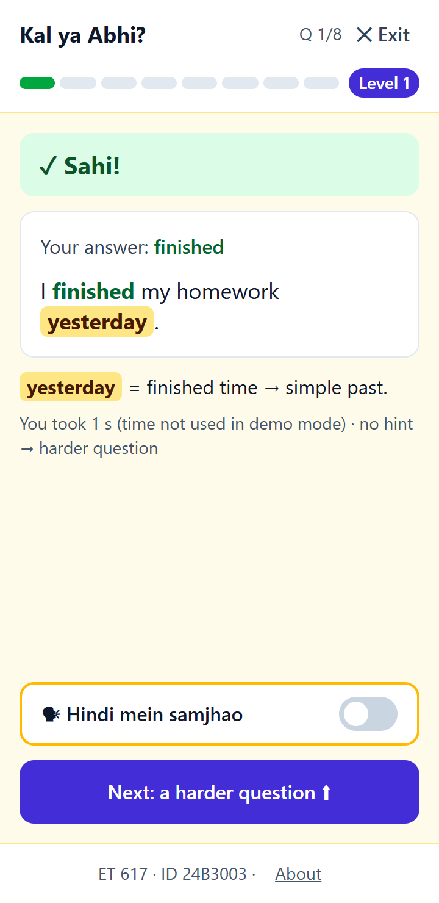
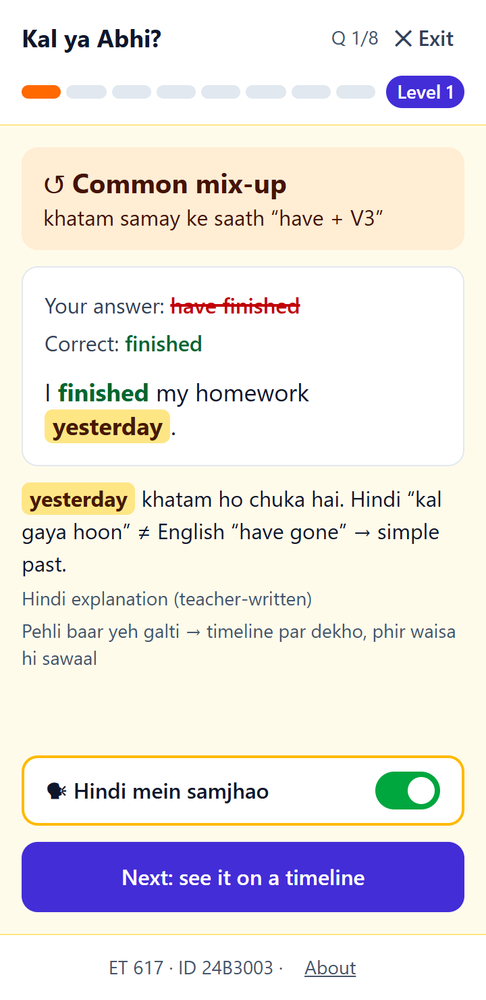
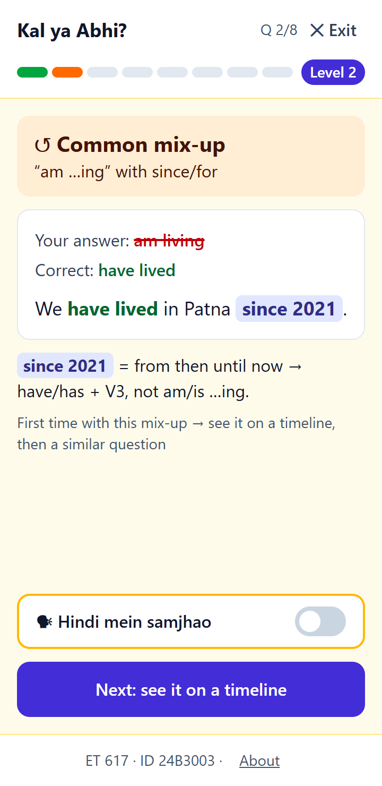
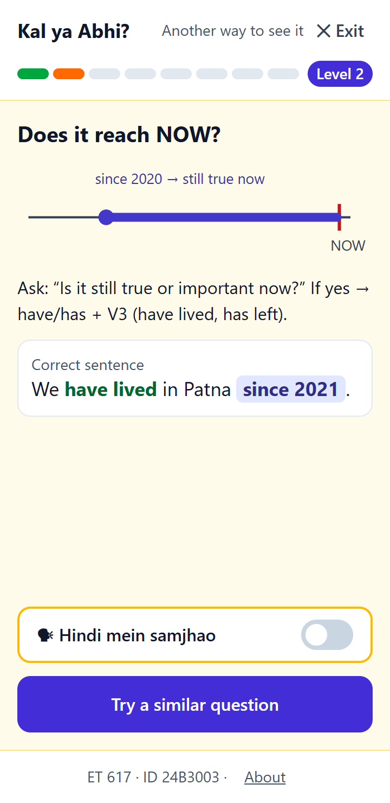
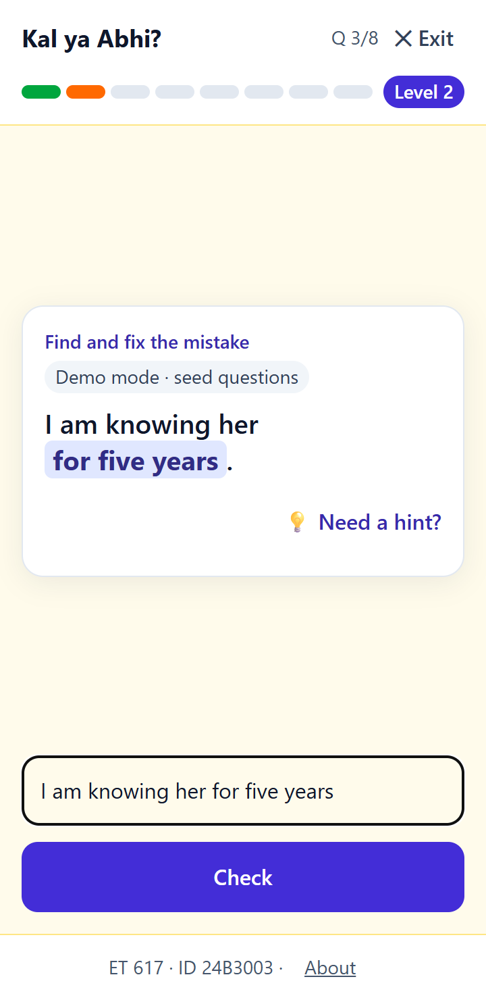
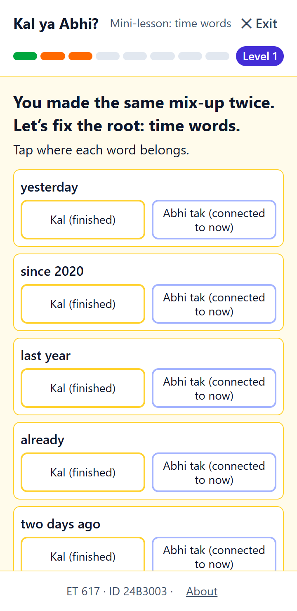

ET 617 End-Semester Examination · 18 Nov 2026 · ID 24B3003
| ID | 24B3003 |
|---|---|
| P | P4 – Adaptive tutor with automatic question generation |
| T | P4-T7 – English tenses: simple past vs present perfect (ESL) |
| L | L8 – Learner whose home language differs from the school medium (Hindi at home, English-medium school) |
| C | C3 – Mobile-first, one-handed |
| Live app | https://et617-24b3003.vercel.app (reproducible walkthrough: https://et617-24b3003.vercel.app/?demo=1) |
| Repository | https://github.com/kcodweb/et617-endsem-24b3003 |
| Starter / libraries | create-next-app (Next.js 15, React 19, Tailwind CSS 4). No UI component library. AI: Anthropic Claude claude-haiku-5-5 via the Messages API. |
Ravi studies in an English-medium CBSE school in Patna, but Hindi is his home language. Every subject is taught and examined in English, so he writes all his answers in English while thinking in Hindi and translating. Hindi freely combines a perfect-looking form with a finished-time word (“main kal gaya hoon”) and a continuous form with “since” (“main 2020 se yahaan reh raha hoon”), so he writes “I have gone to the market yesterday” and “I am living here since 2020”. Teachers mark these wrong without naming the rule, so the errors return — and they cost him marks in science and social-science answers too, not only in English.
Learning outcomes. The learner will be able to:
Context of use: at home in the evening after homework, about 15–20 minutes, on his father’s budget Android phone (360 px), held in one hand.
| Name / age | Ravi Kumar, 13, Class 8, English-medium CBSE school, Patna (Bihar) |
|---|---|
| Languages | Home language Hindi (family, friends); school medium English for all subjects — he thinks in Hindi and translates. |
| Prior knowledge | Knows the verb table (go/went/gone, see/saw/seen); forms the simple present and present continuous; has not understood the meaning difference between simple past and present perfect. |
| Misconception M1 | Present perfect with a finished time, transferred from “main kal gaya hoon”: “I have gone yesterday.” He believes “have + V3 = past”. |
| Misconception M2 | Continuous/simple present with since/for, transferred from “2020 se reh raha hoon”: “I am living here since 2020.” |
| (Extra, M3) | Simple past for experience questions: “Did you ever see a tiger?” |
| Device / time | Father’s Android phone, ~20 minutes after homework, often one hand free. |
| Motivation | Wants to stop losing marks for grammar and not be laughed at when he speaks; likes quick wins; gives up after unexplained red crosses. |
| # | Level | Format | Item | Model answer |
|---|---|---|---|---|
| q1 | 1 | MCQ | I ___ my homework yesterday. (finished / have finished) | finished |
| q2 | 1 | Fill | We ___ (live) in Patna since 2021. | have lived |
| q3 | 1 | MCQ | ___ you ever ___ a tiger? (Did … see / Have … seen) | Have … seen |
| q4 | 2 | Fix | I have seen that film last Sunday. | I saw that film last Sunday. |
| q5 | 2 | Fill | My father ___ (buy) a new phone last month. | bought |
| q6 | 2 | Fix | I am knowing her for five years. | I have known her for five years. |
| q7 | 3 | Explain | Why is “She has just left the class” correct? | “Just” connects the action to now → present perfect. |
| q8 | 3 | MCQ | Rani ___ to Delhi three times, but she ___ there in 2019 for the first time. (has been … has gone / has been … went / went … has gone) | has been … went |
| q9 | 3 | Explain | Why is “I have met the principal yesterday” wrong? | “Yesterday” is finished → I met the principal yesterday. |
| q10 | 3 | Fill ×2 | I ___ (know) Amit since Class 3, and we ___ (meet) first at a cricket match. | have known … met |
| q11 | 3 | MCQ | Papa ___ to Delhi. He will come back on Sunday. (has gone / has been / went) | has gone |
| q12 | 3 | Fill ×2 | When ___ you ___ (reach) Patna? | did … reach |
| q13 | 3 | Fix (2 errors) | Yesterday I have gone to the market. I am living in Patna since 2019. | Yesterday I went to the market. I have lived in Patna since 2019. |
| Verdict | English rule line | Hindi rule line (“Hindi mein samjhao” toggle) |
|---|---|---|
| Correct | yesterday = finished time → simple past. | yesterday = khatam ho chuka samay → simple past. |
| M1 | yesterday = finished time → simple past, not have/has + V3. | yesterday khatam ho chuka hai. Hindi “kal gaya hoon” ≠ English “have gone” → simple past. |
| M2 | since 2021 = from then until now → have/has + V3, not am/is …ing. | since 2021 = tab se ab tak → “have/has + V3”, “am/is …ing” nahi. |
| M3 | ever = your life up to now → have/has + V3, not did. | ever = ab tak ki zindagi mein → “have/has + V3”, “did” nahi. |
URL: https://et617-24b3003.vercel.app. The footer “ET 617 · ID 24B3003 · About” is on every screen.
Tabs (bottom, thumb zone): Home · Learn · Practice · Mistakes · Me
Home ─┬─ Start / Continue practice (saved level) ──► Practice loop
├─ Learn the 2 ideas ──► idea cards ├─ Time-word game (10 words, best score saved)
└─ Practise my mistakes (N) ──► Mistakes
Practice loop (tab bar hidden, "✕ Exit" in header):
Question (MCQ / fill / fix / explain, 💡 hint) ──► Feedback (status, answer comparison, corrected sentence,
rule line, decision line, Hindi toggle) ──► harder | same level | timeline + similar item | time-word
mini-lesson ──► … ──► Summary (score circle, per-rule bars, mix-up tags)
Mistakes ──► notebook ──► Practise my mistakes (≤5 items on the same rules) ──► Summary
Me ──► progress + settings (Hindi by default, left-handed mode, text size, reset) ──► About
C3 (mobile-first, one-handed), visible in the app: the whole app is one 360 px column (shown as a phone on a laptop); every tap target is ≥ 48 px; answers, Check and Next sit in the bottom thumb zone; tap only, no hover; the keyboard does not hide the Check button; a left-handed mode mirrors the hint and switches to the left.
(a) Correct learner: q1 “I ___ my homework yesterday.” → taps finished → “✓ Sahi!”, rule line “yesterday = finished time → simple past.”, decision line “no hint → harder question” → Level 1 → 2.



(b) Learner with misconception M2: q2 “We ___ (live) in Patna since 2021.” → types am living →
“↺ Common mix-up: ‘am …ing’ with since/for”, am living → have lived → timeline “Does it reach NOW?” →
q6 “I am knowing her for five years.” left unchanged → the same M2 again → mini-lesson “You made the same mix-up twice.
Let’s fix the root: time words.” → back to practice at Level 1. The system responds differently to (a) and (b).




app/api/generate/route.js)What it does: writes the next practice item for the learner’s level, target rule and last misconception.
Input: the system prompt below + a user message such as
Level: 2. Target rule: perfect. Learner's last misconception: M2. Do not repeat these sentences: [...].
You write ONE English grammar practice item for Ravi, a 13-year-old Class 8 learner at an English-medium CBSE
school in Patna, Bihar. His home language is Hindi; English is his school medium for all subjects, so he thinks in
Hindi and translates. Topic: simple past vs present perfect. Use simple vocabulary and Indian everyday contexts …
Return ONLY JSON: {"format":"mcq"|"fill"|"fix","rule":"past"|"perfect","prompt","options","answer","accept","marker"}
Rules: "past" = FINISHED time marker → simple past; "perfect" = connected to now → present perfect; "marker" must
be the exact time words in "prompt"; perfect answers use have/has + V3, not "has been living"; fill = ___ + (base
verb); fix = exactly one tense error. Levels: 1 single clause, obvious marker; 2 questions, negatives, for vs since;
3 has gone vs has been, When-questions, two-clause context. Still exactly ONE blank / ONE error.
Real output (live): {"format":"fill","rule":"perfect","prompt":"My uncle ___ (work) at the railway station in Patna since 2015.","answer":"has worked","marker":"since 2015"}
Checks before the learner sees it: allowed format and rule; the marker literally appears in the sentence; the answer’s tense agrees with the rule (a “past” item may not have a have/has answer, a “perfect” item must); MCQ options contain the answer; a fill item contains “___”. Fallback: timeout (12 s), API error, unparseable JSON or a failed check → the next unseen teacher-written item at that level, labelled “Offline (AI unavailable)”.
app/api/evaluate/route.js)What it does: classifies Ravi’s free-text “why” answer as correct / M1 / M2 / other and writes ≤ 2 sentences of feedback.
You are a kind English tutor for Ravi (13, Class 8, English-medium CBSE school in Patna; Hindi is his home
language …). Ravi may write in English, Hindi or Hinglish: judge the reasoning, not the language. Classify:
"correct" refers to the time marker or finished vs connected-to-now; "M1" thinks have/has + V3 can go with a finished
time; "M2" thinks since/for go with am/is …ing; "other". Return ONLY JSON {"verdict","feedback"}. Start with "Sahi!"
ONLY when correct, otherwise "Achha try!"; always name the time word.
Real output (live): Ravi: “kyunki yesterday khatam ho gaya, isliye simple past aayega” →
{"verdict":"correct","feedback":"Sahi! You noticed that yesterday is a finished time, so we use the simple past …"}
Checks: verdict must be one of the 4 labels; feedback > 300 characters is cut; empty answers are handled
before any AI call. Fallback: the rule-based ruleCheck() (word-boundary patterns: “is/am …ing” → M2,
“have … means past” → M1, unless the learner rejects that form; marker or finished/now words → correct) with
teacher-written feedback, labelled “Offline feedback”. Not AI: MCQ/fill/fix grading (classify() grades
the tense of the key verb), the decision rule, and all Hindi text. The API key is a Vercel environment variable only.
Design challenge — decision rule (decide() in lib/engine.js), shown to the learner as a grey line on every feedback screen:
| Learner response | Next step |
|---|---|
| correct, no hint, ≤ 45 s | harder question (level +1) |
| correct but hint used or > 45 s | same level, new question (right but not yet secure) |
| first M1/M2/M3, or another error | alternative explanation: timeline “Is the time finished?” / “Does it reach NOW?” + the corrected sentence, then a similar item |
| the same misconception twice | prerequisite instruction: sort 6 time words into Finished / Connected to now, then level −1 |
Where each outcome is shown (D5): harder question → A2; alternative explanation → B2 (timeline, after the first M2 in B1); prerequisite instruction → B4 (mini-lesson after the second M2). Same level (no screenshot): if the learner taps “💡 Need a hint?” on q1 and then answers correctly, the feedback shows “✓ Sahi!” with the grey line “Hint used → one more at this level” and the button “Next: one more at this level”; the level badge stays at 1 (the same happens after a correct answer that took more than 45 s, outside demo mode).
| Outcome | Assessment | Success |
|---|---|---|
| LO1 classify time words | Time-word game: 10 words, every pick logged | ≥ 8/10 on the first game |
| LO2 choose/produce the form | Pre-test vs post-test, 5 mixed items each (same rules, new sentences) | mean gain ≥ 2 items; ≥ 60% of learners ≥ 4/5 |
| LO3 explain | Rubric on explain items: 0 = no reason, 1 = names the tense, 2 = refers to the time word / connected to now | ≥ 60% score 2 by the end |
Log data (per answer, in localStorage; a study would send it to a database): question id, rule, level, format, response, verdict (correct/M1/M2/M3/other), adaptive action, hint used, time taken, language (en/hi), AI vs offline source; events for language and setting changes, hints and game results. Analysis: M1/M2 rate across the session (should fall), how often the prerequisite branch fires, accuracy on the item after an alternative explanation, and whether Hindi feedback users improve faster. A short think-aloud with 3–5 Class 8 learners in this context would check whether the Hindi contrast card helps.
AI chats, in the order used (exports submitted on Moodle with this report):
claude-haiku-5-5 via the Anthropic API: question generation and explanation
evaluation (D6).max_tokens; fixed by raising the limit and logging the stop reason.ruleCheck() with word boundaries and 6 tests.